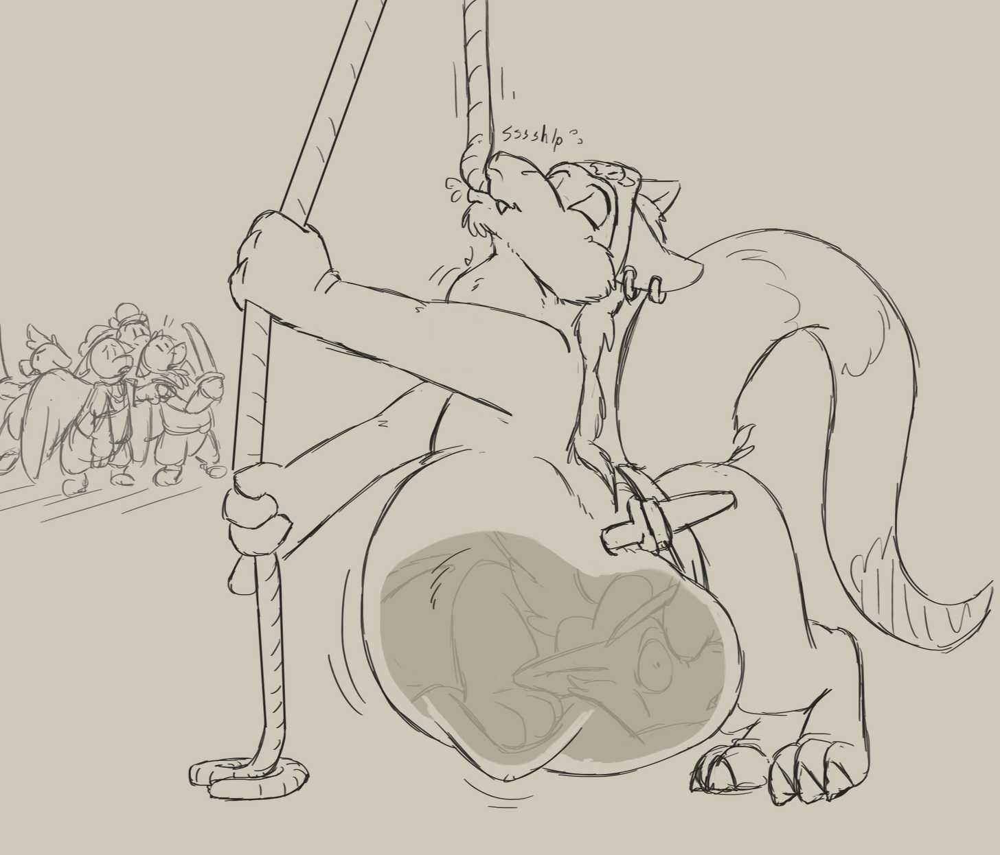

The fight was fierce, none of the raptors you sent to attack are in sight. Perhaps they got surrounded and overpowered on the Wulf-ship. your defending raptors worked hard, but Wulfs are nimble and they didnt manage to stop many from boarding. the raptors you sent to chase the Wulfs around were suprisingly effective. It kept the pirates on their toes and unable to commit anywhere, or face the jaws of a raptor.
With your first-mate by your side you managed to organize the crew more cohesively between yourself. But they gain quite and advantage in numbers and positioning. Cutting down the rigging, while extreme, had positive results. A more clear line of confrontation was established, with Wulfs no longer able to drop down from above. Quite a few of them were taken out of the fight too! Your mad-dash towards the forecastle to assist the knot of crew in trouble, while brave, was still too late and resulted in some confusion and no gain. Eager crew broke lines to join their charging captain, giving the enemy advantage.
Battle advantage:
- 'Awe-feast tonight lads!' he taunted in accented Awe-speech, licking his chops and rubbing his belly suggestively, sure of their victory.
- 'Dey fight brave! But we likes a bit of kick in our feast, dont we!' he taunted in accented Awe-speech and licked his chops.
- 'Ye fight brave and hard! Surrender Awes! And we will divide you amongst ourselves quick and easy!' he taunted in accented Awe-speech and licked his chops.
- 'Ye be hard fighters! But the best of ye is no match for me! How about a deal, aye?' he tried to bargain in accented Awe-speech.
- 'Ye be hard fighters! But any of you brave enough to face me in combat!? How about a deal, aye?' He tried to bargain in accented Awe-speech.
Battle
I wouldn't let his taunts affect me, things looked grim and they'd be worse if I stooped to bargaining with a Wulf who was not likely to uphold his end anyway!
I ordered the attack and our forces clashed. My brave crewmen were disciplined and held their line for as long as they could. But sheer numbers overwhelmed us and in the end I was suddenly ensnared by a rope and yanked upwards towards the riggings, the catch of the day by some lucky Wulf.
Cursing and kicking i found myself helplessly scarfed down into an eager maw and gullet, swallowed whole before the battle was even over!
Muffedly i could hear traces of the fight quickly putter to an end, i could only imagine my crew one by one suffering similar fates.
The Wulfs had tricked us well! Made us give chase and pretended to be wounded and low on crew. Instead of ending their menace, they now had a new fresh ship and bellies full of naive Awes. And many more would surely follow our fates down their gullets.
A thunderous belch tighten the little space I had left and things soon fade into darkness.

I wouldn't let his taunts affect me, things looked bad and they'd be worse if I stooped to bargaining with a Wulf who was not likely to uphold his end anyway!
I ordered the attack and our forces clashed. My brave crewmen were disciplined and held their line for as long as they could. But sheer numbers wore us down and in the end I was knocked to the ground by something hard from behind.
I woke only briefly inside the tight, slimy and pulsating chamber of someone's stomach. The filling prize for some anonymous pirate!
The Wulfs had tricked us well! Made us give chase and pretended to be wounded and low on crew. Instead of ending their menace, they now had a new fresh ship and bellies full of naive Awes. And many more would surely follow our fates down their gullets.
A thunderous belch tighten the little space I had left and things soon fade into darkness.
I ordered the attack suddenly. With things so even, there was no point leaving it any more to chance! Weary Wulfs fought tired Awes, none gaining the immediate advantage.
But discipline and drilled tactics prevailed against the wilder, albeit ferocious pirate methods. More of them got knocked down then us and while their Captain Nipfang threatened, I encouraged the troops.
In the end we drove them back to their smashed up ship. It was taking on water and slowly sinking deeper with each wave that rocked it. The remaining Wulfs soon surrendered.
Unfortunately, of Nipfang there was no trace! There were not many places for him to hide, nor did anyone admit to his consumption, so it could only be assumed he braved the open seas on a piece of wreckage.
Nipfangs pleads and challenges meant nothing. Why would I give up a tactical advantage for some show of personal prowess?! I ordered the attack and my crew got to work.
The wulfs fought hard and with the kind of desperation of cornered animals. With no ship to escape back to they had nowhere to run. But with methodical discipline and drilled tactics everyone including the Raptorians knew what to do and how to do it
We swept most of them off the ship at first, subdued the ones that fell or surrendered and surrounded the last of them and achieved victory.
Unfortunately, when rounding up all the prisoners, Nipfang could not be found. Nor did anyone admit to his consumption. Its believed he braved the open seas on a piece of wreckage.
Nipfangs pleads and challenges were ridiculous. Why would I give up a superior tactical advantage for some show of personal prowess?! I ordered the attack and we quickly routed them, they were tired and demoralized as it was so it was hardly a fight.
It was a resounding victory overall, we completely turned their little trap on its head and showed them the superiority of a true fighting force.
Unfortunately, Nipfang made his escape in the initial turmoil of our attack. He was seen leaping overboard and paddling away with a piece of wreckage. The seas should take him, but in-case he does not, a Wulf without a ship or crew is hardly a threat.
Duel
Nipfang is a big brute of an Igwulf. This is a chance to pin him down in single-combat and capture him for sure!
"Duel it is you savage! Lets see what you know about honour and losing fair and square!"
The Wulf captain just scoffs and laughs heartily. He has a wicked blade with a hook on the end brandished and ready. He does not wait but lunges with it
Tactics on how to proceed flash through my head.
Swordplay
A savage like Nipfang should be easy to overpower with speed and trained sword techniques. A quick slash and thrust has him backing away, with a scowl on his face.
But i barely have time to relish my advantage as he with shere force flicks the sword out of my grip with a twist of his sword and with the use of that devious hook at the end of his blade!
The sword clatters along the deck and I barely dodge a vicious follow-up blow by diving after it. Luckily it lands at the feet of my First-mate who's quick to kick it back in my direction expertly.
Sure of his victory, Nipfang lunges after me, only to find his sword-arm nicked as I turn and slash. I know the tricks of his blade now and the rest is just about keeping an eye open for further dirty tricks. I soon have him pinned against a wall, sword pointed at his neck.
The sword clatters along the deck and I barely dodge a vicious follow-up blow by diving after it. It lands at the feet of a familiar red-furred Wulf who's sporting a sizeable rounded and squirming gut, the one that ate my first-mate!. She leers at me and kicks the sword out of my reach just as I reach for it.
I barely have time to curse her as i feel the sharp edge of Nipfangs blade press down on my back between my wings.
"It appears, despite all, that I'll be having a grand feast tonight". The blade is replaced by a sizeable foot-paw at the back of my head, pressing me down against the deck.
"Yer all my dinner!" He cheered and let his hungry eyes sweep over my former crew.
Honourable to a fault the crew stood stunned as they were disarmed and captured. The battle had been ours, but a foolish bet and captain had whisked it away.
Nipfang feasted himself full to the brim that day, managing the captain herself and her closest officers in one go. As he had single-handedly turned the tide on a losing battle, no one disputed his lavish claim on all the prisoners.
While his crew worked on restoring their newly captured ship, Nipfang aquainted everyone with his appetite and in a feat of gluttony worked off the entire Awe crew by himself, day after day, until we were all part of expanded infamy and girth.
Your legacy is to be the permanent paunch on Nipfang the Awe-eater! Scourge of the East-sea.
The sword clatters along the deck and I barely dodge a vicious follow-up blow by diving after it. It lands at the feet of a familiar red-furred Wulf who's sporting a sizeable rounded and squirming gut, the one that ate my first-mate! She leers at me and kicks the sword out of my reach just as I reach for it.
I barely have time to curse her as i feel the sharp edge of Nipfangs blade press down on my back between my wings.
"Hrahah, that was over quick! How come they made you captain, you're not very strong!" He mocked with glee. "No matter, im sure you'll go down just as easy."
The wulf grabbed me by the cape, hauled me up towards his waiting gape. I barely have a moment to flinch at the sight of the red maw and slobbery tongue before he shoves me into it headfirst and swallows me whole.
'Glk...glk...glk', the gullet ripples around me, I kick but find no footing or escape as he devours me in-front of my stunned crew. Nipfang knew the value of shock and initiative.
Frustration and fury do nothing to help me as I fill out Nipfangs sizable belly. He cackles again and thumps his paw hard on his new roundness.
"Who's next!?"
Honourable to a fault and weary from battle the crew stood stunned as they were disarmed and captured.
What became of them all is unknown. Most however probably ended up as their captain, a delicious spoil of victory.
Your legacy was a unremarkable and embarassing defeat to the sword and belly of Wulf-pirates. Forgotten in the annals of history
Tackle
I dont leave the big brute waiting. I surge forward and knock into his centre mass in a hasty tackle, confident that he'd not expect to tangle so closely and suddenly.
We go down in a tumble, im ontop and about level my sword against him when I feel his dexterous tail wrap around my waist and yank me backwards. A kick from his foot quickly followed and I went tumbling along the deck backwards, wind knocked out of me.
Im barely on my feet before I feel my feet pulled out from under me, that tail again! I try to slash at it but Nipfangs sword meets mine and blocks it and disarms me with a twist of his odd sword. He's thoroughly in control of the fight and does not let me get on my feet.
I spend a few undignified moments getting trashed about before Nipfang cackles loudly again and levels his sword against my back
"So much for that!" Nipfan chuckled darkly. "There's fire in you, that much is true. I think ill take that fire for myself!"
Without much further ado the Wulf-captain hoisted me up, leered in my face and yawned wide, giving me a close view of his glistening maw, undulating tongue and yawning gullet. I managed to give him a kick in the gut before he angrily shoved me down his throat.
As darkness of hot flesh and squeezing muscle enveloped me, I accepted I'd lost and I was now Wulf-food. And so was my crew, short of the few they'd keep around as entertainment.
Your legacy was a unremarkable and embarassing defeat to the sword and belly of Wulf-pirates. Forgotten in the annals of history
I spend a few undignified moments getting trashed about before Nipfang cackles loudly again and levels his sword against my back
"So much for that!" Nipfan chuckled gleefully. "There's fire in you, all of you! Now its all mine!" He laughed again triumphant. He'd turned a bad situation into his favour through my folly.
Before the crew could rebel against its new fate, the pirates were upon them. Disorganized and demoralized they fell apart quickly, some outright surrendered honourably as had been agreed.
Then as they had promised, they feasted and gorged themselves. Later under the collective chorus of rumbling groaning bellies my crew and myself succumbed.
Your legacy was a unremarkable and embarassing defeat to the sword and belly of Wulf-pirates. Forgotten in the annals of history
I feel the eyes of the crew upon me. This is no way to set an example! To loose ourselves to Wulf appetites now when we had victory in our grasp, all because of me, is unacceptable!
With a surge of adrenaline and anger I lock my feet around Wulfs and twist my body hard, pulling him to the ground just as he was confident of his victory. I leap upon him and give his snout a punch and then another.
He twists and squirms like the elusive Wulf-kin he is, but ill have none of it and keep him down with a hail of blows.
In the end holds his paws up in surrender and I feel the fire within me subside. It wasent the most dignified victory, but sure enough the Wulfs surrender all the same in the face of such ferocity.
Defensive dueling
Patience and a cool head prevails, I level my sword with Nipfang and wait for him to make the first move. He soon barges in, swinging that wicked hooked sword of his around in dangerous arcs
I can see his ploy, he seems glad that im fighting defensively, trying to get me to parry a dangerous blow so he can twist my sword out of my grip. I'll have none of it and take easy steps around the circle we occupy, bidding my time and counting his weaknesses and openings.
Nipfang grows increasingly frustrated, he's been trying to end things quickly while i've only made moves to draw things out. Though i've recieved a few nicks that have trimmed my fur in places, im not the one panting and unable to properly hold my sword up
I can see the Wulf-captain look around for any sort of edge he could use, but whatever or whoever he's looking for isnt there to help him. Only concentrated Awes stare back at him
I take the next opportunity to change pace and suddenly attack, Nipfangs sword soon clatters to the deck as he clutches his cut paw and hisses angrily. He's defeated and outplayed!
Nipfang grows increasingly frustrated, he's been trying to end things quickly while i've only made moves to draw things out. Though i've recieved a few nicks that have trimmed my fur in places, im not the one panting and unable to properly hold my sword up
Yet still he's leering at me after having glanced about a few time. I follow his glance and spot too late how he throws a dagger at me that he seems to have aquired from somewhere!
I manage to deflect the dagger, but it distracts me long enough for Nipfang to lunge in hard and bat my sword away with his own, disarming me.
"I HAVE YOU NOW!" He gleefully cackled.
I look around for a replacement weapon, but spot only a familiar green-furred Wulf winking at me, this fellow is making a point out of showing off his huge gut tauntingly, i should have dealt with him myself. Im inevitably cornered and at sword-point, defeated.
"Quite the workout you've given me!" Nipfang leaned his snout in close to my face. "I'll make sure to give you one inside me!"
With a sudden jerk forward my vision was enveloped by a red blur. Nipfang held my head within the darkness of his maw, as I struggled in his grip. My back touched ground, as he leaned his weight against me and pinned me down. It seemed he was taking delight in my hopeless situation, as he chuckled around my head.
He yanks me upwards, my face forced against his gullet. My body quickly pulls out from under him, Nipfang forcing and pushing his squirming meal into his face until he can finally close that gaping maw, tilting his head back and gulping one last time.
My futile kicks and struggles are plenty enough workout to wear me out, before finally submitting to the confines of the sizeable wulfs gut.
Your legacy was a unremarkable and embarassing defeat to the sword and belly of Wulf-pirates. Forgotten in the annals of history
Nipfang grows increasingly frustrated, he's been trying to end things quickly while i've only made moves to draw things out. Though i've recieved a few nicks that have trimmed my fur in places, im not the one panting and unable to properly hold my sword up
I can see the Wulf-captain look around for any sort of edge he could use, but whatever or whoever he's looking for isnt there to help him. Only concentrated Awes stare back at him
I take the next opportunity to change pace and suddenly attack, Nipfangs sword soon clatters to the deck as he clutches his cut paw and hisses angrily. He's defeated and outplayed!
Nipfang grows increasingly frustrated, he's been trying to end things quickly while i've only made moves to draw things out. Though i've recieved a few nicks that have trimmed my fur in places, im not the one panting and unable to properly hold my sword up
Yet still he's leering at me after having glanced about a few time. I follow his glance and spot too late how he throws a dagger at me that he seems to have aquired from somewhere!
I manage to deflect the dagger, but it distracts me long enough for Nipfang to lunge in hard and bat my sword away with his own, disarming me.
"I HAVE YOU NOW!" He gleefully cackled.
I look around for a replacement weapon, but spot only a familiar green-furred Wulf winking at me, this fellow is making a point out of showing off his huge gut tauntingly, i should have dealt with him myself. Im inevitably cornered and at sword-point, defeated.
"Quite the workout you've given me!" Nipfang leaned his snout in close to my face. "I'll make sure to give you one inside me!"
With a sudden jerk forward my vision was enveloped by a red blur. Nipfang held my head within the darkness of his maw, as I struggled in his grip. My back touched ground, as he leaned his weight against me and pinned me down. It seemed he was taking delight in my hopeless situation, as he chuckled around my head.
He yanks me upwards, my face forced against his gullet. My body quickly pulls out from under him, Nipfang forcing and pushing his squirming meal into his face until he can finally close that gaping maw, tilting his head back and gulping one last time.
My futile kicks and struggles are plenty enough workout to wear me out, before finally submitting to the confines of the sizeable wulfs gut.
Your legacy was a unremarkable and embarassing defeat to the sword and belly of Wulf-pirates. Forgotten in the annals of history
Nipfang grows increasingly frustrated, he's been trying to end things quickly while i've only made moves to draw things out. Though i've recieved a few nicks that have trimmed my fur in places, im not the one panting and unable to properly hold my sword up
I can see the Wulf-captain look around for any sort of edge he could use, but whatever or whoever he's looking for isnt there to help him. Only concentrated Awes stare back at him
I take the next opportunity to change pace and suddenly attack, Nipfangs sword soon clatters to the deck as he clutches his cut paw and hisses angrily. He's defeated and outplayed!
Negotiate
"You celebrate too early you wretches! I stand yet unbeaten!" I faced their numbers down ahead of my crew. I felt a rage and a fire inside like I had never before. It must have shown, for the Wulfs paused and looked to their captain
Nipfang himself strode to face me and smirked confidently.
"Come now captain, no need to put on a brave face. I'll personally ensure you have a quick passing into the hereafter through me. You should be honoured!"
"You speak of honour, but dare not face your opponent on your own? We will accept no defeat from fluff-biters led by a coward!" I scowled and raised my sword in challenge.
My words seemed to have an impact on the Wulf captain. He seethed and glowered at me, growling at the insult. Among Wulfs, being the more capable one was everything to remain captain. I just questioned his competence
"So be it! A fight you want, a fight you'll get! But you'll crawl right down my gullet without complaint after defeat and you'll crew will follow!"
"Likewise..." I grinned. I had my shot.
"You celebrate too early you wretches! I stand yet unbeaten!" I faced their numbers down ahead of my crew. I felt a rage and a fire inside like I had never before. It must have shown, for the Wulfs paused and looked to their captain
Nipfang himself strode to face me and smirked confidently.
"Come now captain, no need to put on a brave face. I'll personally ensure you have a quick passing into the hereafter through me. You should be honoured!"
"You speak of honour, but dare not face your opponent on your own? We will accept no defeat from fluff-biters led by a coward!" I scowled and raised my sword in challenge.
My words seemed to have an impact on the Wulf captain. He seethed and glowered at me, growling at the insult. Among Wulfs, being the more capable one was everything to remain captain. I just questioned his competence
"So be it! A fight you want, a fight you'll get! But you'll crawl right down my gullet without complaint after defeat and you'll crew will follow!"
"Likewise..." I grinned. I had my shot if i chose to take it. Else I could order the attack and battle it out.
It'd be a rough messy battle that could go either way if we fought now. I can tell Nipfang is none too eager looking for an all out final-brawl.
"Its you who should surrender! Any willing prisoners that submit now will be granted amnesty as according to Admiralty law!"
Nipfang scoffed and waved his paw in irritation!
"Words are wind! None of us will submit to any fancy 'promises' of yours!" He leveled his sword and pointed at me. "How about this then, brave Admiralty Captain, face me in combat! Winner takes all!"
I weighed his offer carefully, it was an opportunity to avoid needless bloodshed. Else I could order the attack and battle it out.
"Surrender!" I demanded loudly. "Any willing prisoners that submit now will be granted amnesty as according to Admiralty law!"
Nipfang scoffed and waved his paw in irritation!
"Words are wind! None of us will submit to any fancy 'promises' of yours!"
"Then you'll all be beaten, rounded up and disposed of as rations! A generous fate for such undeserving wretches!" I glowered.
He leveled his sword and pointed at me. "How about this then, brave Admiralty Captain, face me in combat! Prove your superiority! Then ill surrender myself and my crew without a big fight!"
Its a risk doing a deal with a pirate-wulf. But his offer was tempting.
"Surrender!" I demanded loudly. "Any willing prisoners that submit now will be granted amnesty as according to Admiralty law!"
Nipfang scoffed and waved his paw in irritation!
"Words are wind! None of us will submit to any fancy 'promises' of yours! Especially from a coward who refuses to face me!"
"Then you'll all be beaten, rounded up and disposed of as rations! A generous fate for such undeserving wretches!" I glowered.
He leveled his sword and pointed at me. "How about this then, brave Admiralty Captain, face me in combat! Prove your superiority! Then ill surrender myself and my crew all peacefull like!"
Its a risk doing a deal with a pirate-wulf. But his offer was tempting.